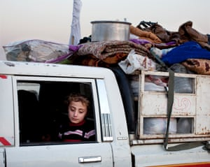
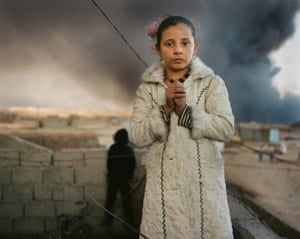
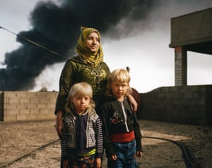
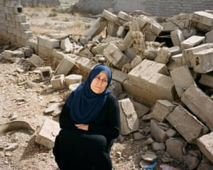
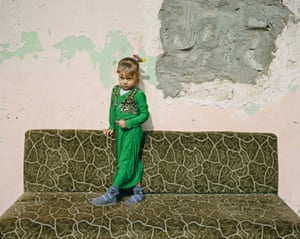
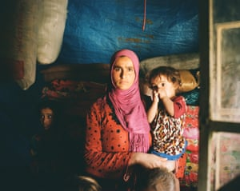
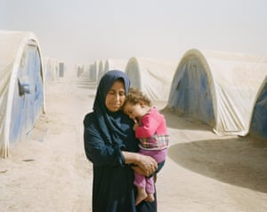
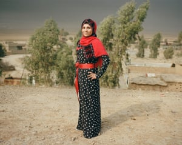
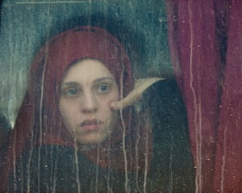
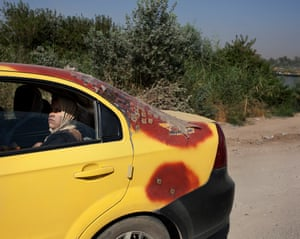

ANIMA-MUNDI GALLERY
Anima-Mundi is proud to present Abbie Trayler-Smith’s ‘After Darkness’, an extraordinary exhibition of photography capturing the devastating effects of Isis on the landscape and people of the region.
Trayler-Smith’s multi award-winning photographs capture the anguish, humility and extraordinary courage of her subjects. At the heart of each image lies the deeply human story, one fought out against a turbulent backdrop of social degradation or the aftermath of conflict.
Trayler-Smith reveals an intense, personal connection to each and every subject, sensitively captured through her lens.
EXHIBITION INTRODUCTION :
“The wound is the place where the Light enters you”Jalaluddin Mevlana Rumi
The Islamic State was declared in the weeks after the capture of Mosul on 10th June 2014. It was only then that countries around the world began to wake up to the fact that Isis posed a serious threat to them all. We watched in appalled fascination as ISIS imposed its rule over a vast area of Northern Iraq and Syria inhabited by 6 million people. Conditions inside its territory remained a mystery to the outside world for some time.
This work examines the answers to many questions: What was it like to live under the tight rule of ISIS and to now be liberated? What was the magnitude of ISIS’ presence, and how did it shape their lives for those two years? What about their families? And where do they go from here?
The women I met shared stories of loss, fear for the future, and resilience — from those who lost their partners, families, children, to those who were determined to rebuild their lives just like they were before ISIS’ arrival. But if there was a common thread, it was the sheer horror of it all.
“We came from the dead”. When the forces first broke into Mosul and people were able to escape, the stories they told were chilling: accounts of a huge hole in the ground where hundreds were buried, of people being shot for having a mobile phone, of a human abattoir, of living in fear and stress. A mother told me how they’d had to stop their children from going to school so that they wouldn’t be brainwashed. And when I asked what she meant she said, ‘You know, in math class, they were counting like two guns plus two guns equals four guns, and singing songs about killing people’.
THE GUARDIAN: After Darkness: Mosul emerges from Isis control – in pictures
After a nine-month battle, Islamic State was finally expelled from Mosul, leaving devastation and residents physically and psychologically scarred by the war. Abbie Trayler-Smith’s new exhibition records the devastating effects of life under Isis control in northern Iraq and the bewildering aftermath of conflict
Abbie Trayler-Smith
The road to Mosul. All photographs: Abbie Trayler-Smith/Panos
Vehicles escaping the battle arrive at Hasan Sham camp in northern Iraq

Luma, 12, lives next door to a burning oil well in Qayyarah, Iraq. More than 15 wells in the town were set alight by Isis as they retreated

Rana, 38, with her sons, Ali and Mohammed, on the roof of their house in Qayyarah, northern Iraq

Samira Leylan, 50, at her home in Bashir. The village was retaken from Isis in May and residents have started to return home

Dalia, five, outside a school building in Haj Ali where families sought refuge after fleeing the fighting in Mosul

Yusra Abdullah, 23, is living in limbo with her five children in a chicken barn, unable to go home and unable to move

Thana Abdulah, 42, travelled with her mother-in-law and children to Tinah camp from her village of Iman Gabi

Hana, 18, is an Oxfam community health promoter in the village of Owsijah

Sara, age 24, arrives at Hasan Sham camp for displaced people after being taken by bus straight from the battle

A taxi in west Mosul bears the marks of war

SOURCE: THE GUARDIAN